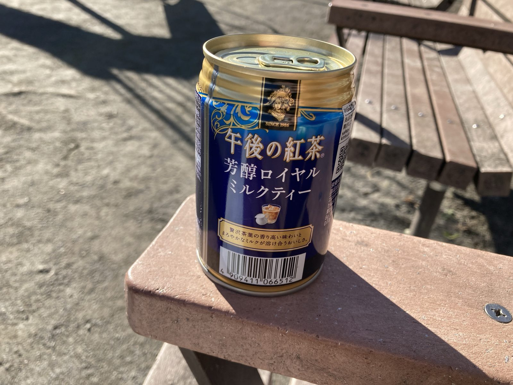

【双極性障害】躁でイライラしたから散歩に行きました
日記双極性障害は、躁と鬱をくりかえす病気です。
私は軽躁の２型で、躁のときの症状は、
などです。
今日もイライラしていたので、部屋をうろうろ歩き回っていました。見かねた家族に「散歩でも行ったら」と言われ、化粧せず上着とマスクをして、財布とスマホと鍵だけ持って家を出ました。
あたたかーい飲み物を買い、近所の公園のベンチにきました。おじさんたちが同じようにコーヒーを持って座っていました。
空は青いし、すずめはチュンチュンだし、ぼーっとするには最高です。
普段は引きこもっているのでちょっと歩くだけでも疲れました。
頭の中は起業したい！1億円欲しい！スーツケース暮らししたい！収入が欲しい！
お腹が空いて家に帰りました。